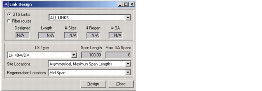

Creating a Baseline Scenario > Link Design > Link Design Dialog Box
Link Design Dialog Box
Choose Design > Link Design to open the Link Design dialog box (Figure 3-34 and Table 3-7-Link Design Dialog Box ). For more information, see Procedure 3-11-Designing Links.
Figure 3-34 Link Design Dialog Box

| Home © 1987-2007 OPNET Technologies, Inc. All Rights Reserved. This software may be covered by one or more U.S. Patents. See complete patent notice in the Legal Notices section. OPNET Support Center |